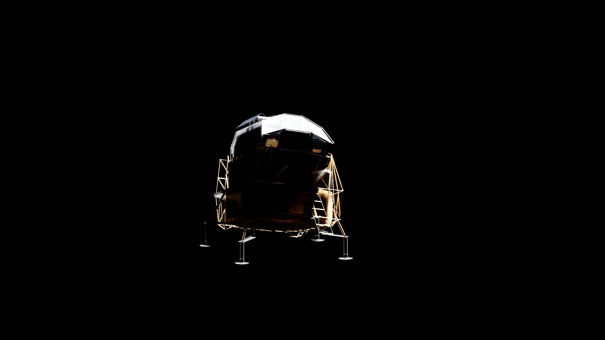
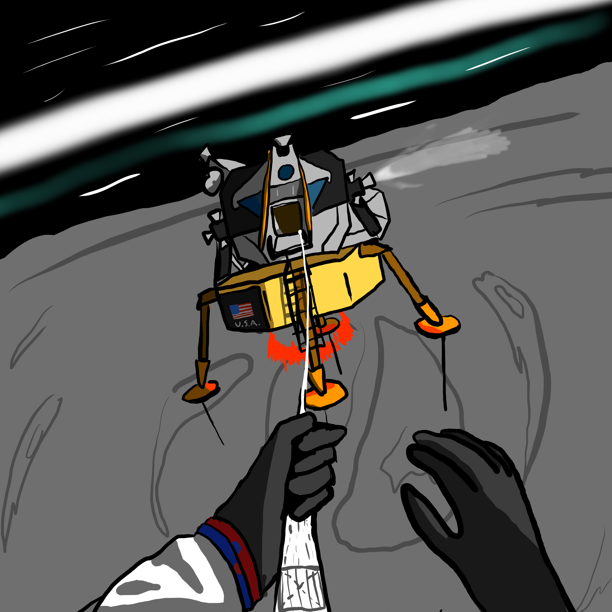

Images are as follows: Upgraded Apollo Lander, Upgraded Soviet Lander (Modeled in Blender)

Apollo 20 commander Gilbert Harris after saving a mission from a deadly spin that could've killed him and pilot Neil Armstrong

The Deadly Spin vvv
Info: Apollo 20 was an Apollo mission piloted by Neil Armstrong, commanded by Gilbert Harris, and navigated by the first
American female astronaut, Janet Armstrong whom was still deemed as "too skilled as a navigator role
" to land on the Moon as stated by an unknown ground
control member. This is why she was navigator and was left behind in the command module while the mission took place. The purpose of this mission was
to set the foundation for the first Lunar base near an icy cave network near Tranquility Base.